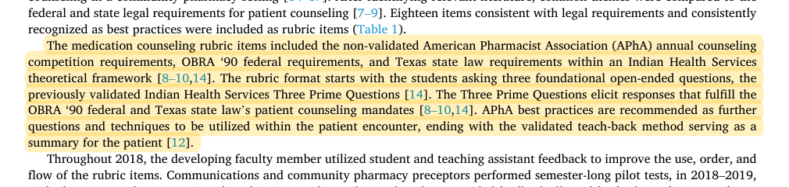
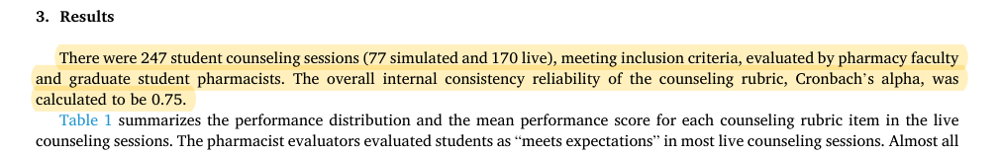
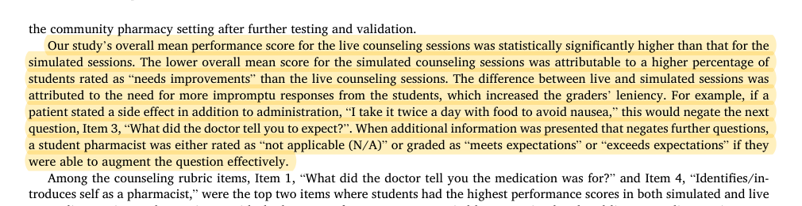

R20 · Education and pharmacy foundations
Counselling assessment requires observable behavior and explicit applicability
An initial reliability analysis of a patient counseling rubric to objectively measure student pharmacist performance
Kristin Ashley Garling, Benjamin Wong · 2023
Heliyon 9:e15768
What the study investigates
The authors develop and preliminarily evaluate an observable, teachable counselling rubric based on the Indian Health Services framework.
How it was studied
An 18-item rubric was used in a 21-hour IPPE course. Three trained pharmacists rated 247 consultations: 77 simulated and 170 real encounters. The study examines internal consistency and differences by consultation format and instructional stage.
Findings
The rubric demonstrates acceptable internal consistency, and mean performance increases during the course. Scores also differ between real and simulated counselling. The discussion notes that information volunteered by a patient may change the applicability and scoring of later items.
Limits of the evidence
Internal consistency is not interrater agreement or accuracy against an independent faculty standard. Changes across course stages are not a randomized causal estimate of learning.
How it informs DualGraph-OSCE
The EGJ engine separates not applicable, incomplete, and insufficient evidence. If a patient has already supplied information, whether the learner must still verify it depends on the approved item rule; neither credit nor a penalty should be automatic. Faculty records should identify the applicable requirement, supporting span, and any relevant prompt source, rather than preserve only a total score.
Where to cite it
Method: an educational example of context-dependent rule applicability. Evaluation: faculty annotation.
Possible manuscript wording
A pharmacy counselling-rubric study notes that patient-volunteered information can change the applicability of behavioral items. DualGraph-OSCE represents that condition explicitly instead of counting keywords alone.
[R20·1]This is a manuscript-specific paraphrase, not a quotation from the source. The excerpts below define what the citation supports. The proposed method and its expected benefits are not findings of the cited paper.
Source passages and precise locations
Page numbers refer to physical pages in the saved original PDF, including any repository cover sheets. Compilation page numbers are listed separately. Yellow highlighting marks the passage used for the argument.
R20-E1Counselling behavior framework
Original PDF page 3. Highlight compilation page 295. The highlight identifies the passage used here; consult the full original page for its context.

R20-E2Evaluation sample and type of measurement
Original PDF page 5. Highlight compilation page 297. The highlight identifies the passage used here; consult the full original page for its context.

R20-E3Patient-volunteered information and item applicability
Original PDF page 7. Highlight compilation page 299. The highlight identifies the passage used here; consult the full original page for its context.
